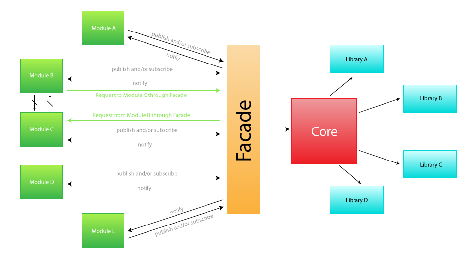

Core
This page contains information about the Didgeridoo's core.
Introduction
Directory Structure
-
didgeridoo
- index.html
-
app
-
core
-
init
- init.js
- libraries.list.json
- modules.list.json
-
libraries
-
a library
-
another library
-
modules
-
ui
-
_css
-
_images
-
a module
-
another module
-
templates
-
a template
-
another template
Additional notes:
The init folder contains a script (init.js) that initializes the application. For that task, this script read the libraries and modules that should be opened at the beginning, from the libraries.list.json and the modules.list.json files.
The deps.js file inside every module folder has the dependencies for that module. Such as libraries to use, other modules to be loaded first, HTML markup or CSS rules.
Why this structure?
Didgeridoo is based on a effective mix of succesful design patterns. These patterns are Facade, Mediator (a.k.a. Pub/Sub) and Module (AMD used here).

The main reasons for why are we using this mix of patterns:
- With the use of the Module pattern we provide less coupling for the app, so if a module breaks, the application can still work. We can also simulate privacy.
- The Facade provide a simple API to interact with the core, so what is happening behind the scenes stands behind the scenes.
- Mediator pattern allows us to also decouple the application by using an event-driven system, and even we can perform validation after a module or another object subscribes to or publishes an event.
If you want to know more about these patterns check this entry from the Addy Osmani blog.
AMD
AMD GitHub profile.
RequireJS
RequireJS website.